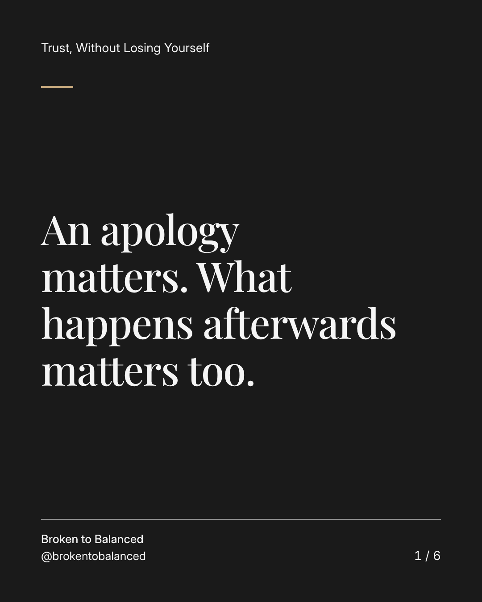
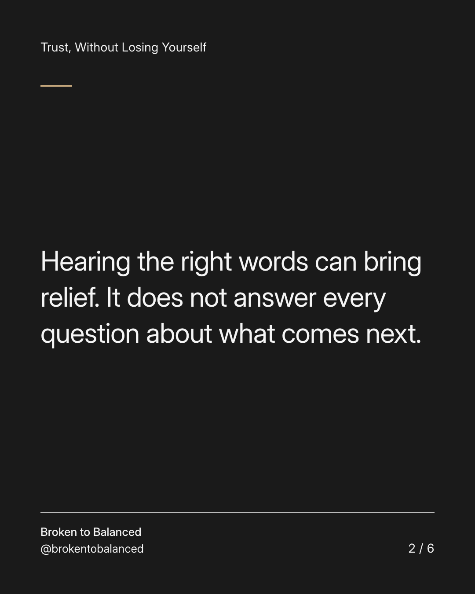
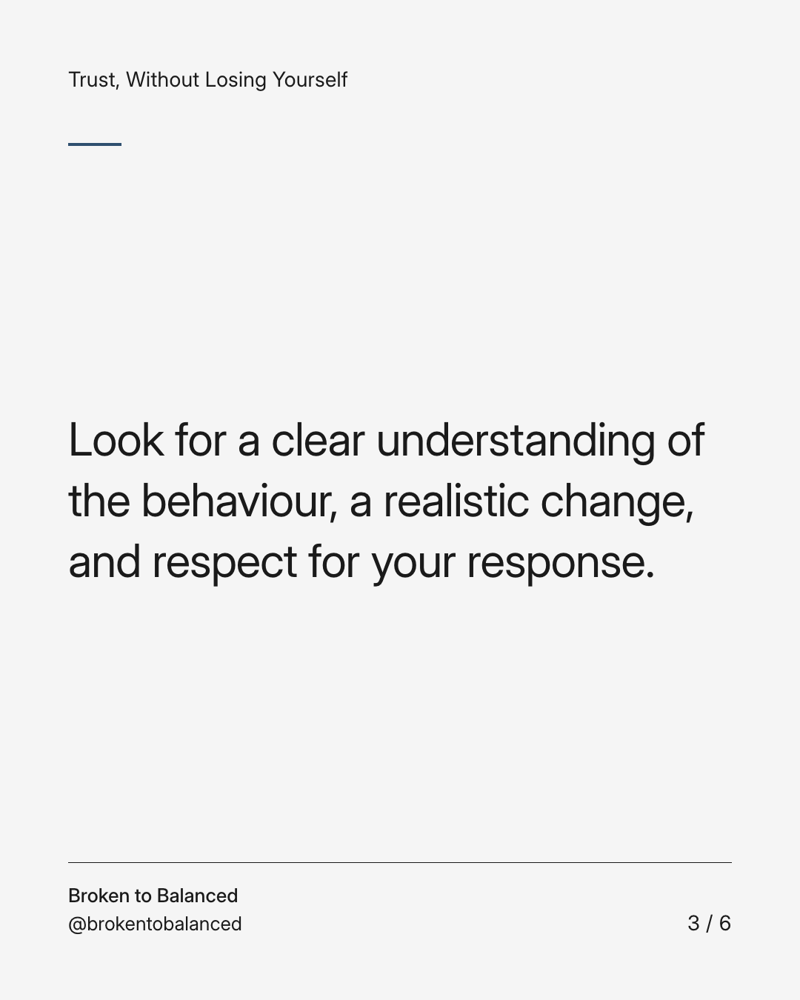
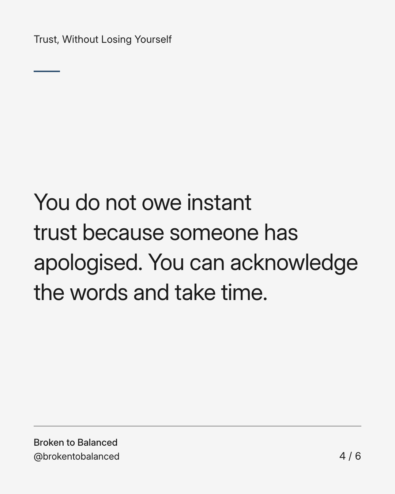
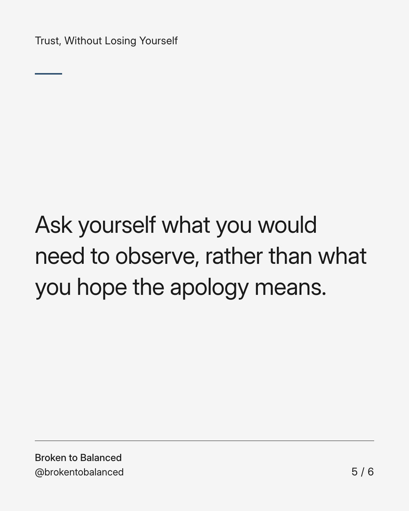
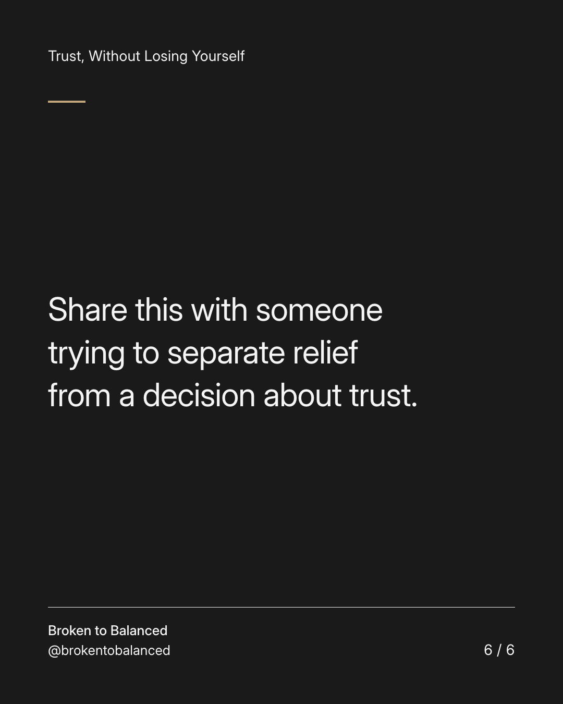

Exact text and accessibility text
An apology matters. What happens afterwards matters too.
Slide 1 of 6. An apology matters. What happens afterwards matters too.


Exact text and accessibility text
Hearing the right words can bring relief. It does not answer every question about what comes next.
Slide 2 of 6. Hearing the right words can bring relief. It does not answer every question about what comes next.


Exact text and accessibility text
Look for a clear understanding of the behaviour, a realistic change, and respect for your response.
Slide 3 of 6. Look for a clear understanding of the behaviour, a realistic change, and respect for your response.


Exact text and accessibility text
You do not owe instant trust because someone has apologised. You can acknowledge the words and take time.
Slide 4 of 6. You do not owe instant trust because someone has apologised. You can acknowledge the words and take time.


Exact text and accessibility text
Ask yourself what you would need to observe, rather than what you hope the apology means.
Slide 5 of 6. Ask yourself what you would need to observe, rather than what you hope the apology means.


Exact text and accessibility text
Share this with someone trying to separate relief from a decision about trust.
Slide 6 of 6. Share this with someone trying to separate relief from a decision about trust.
Exact caption
Plain-text fallback: select and copy the caption.